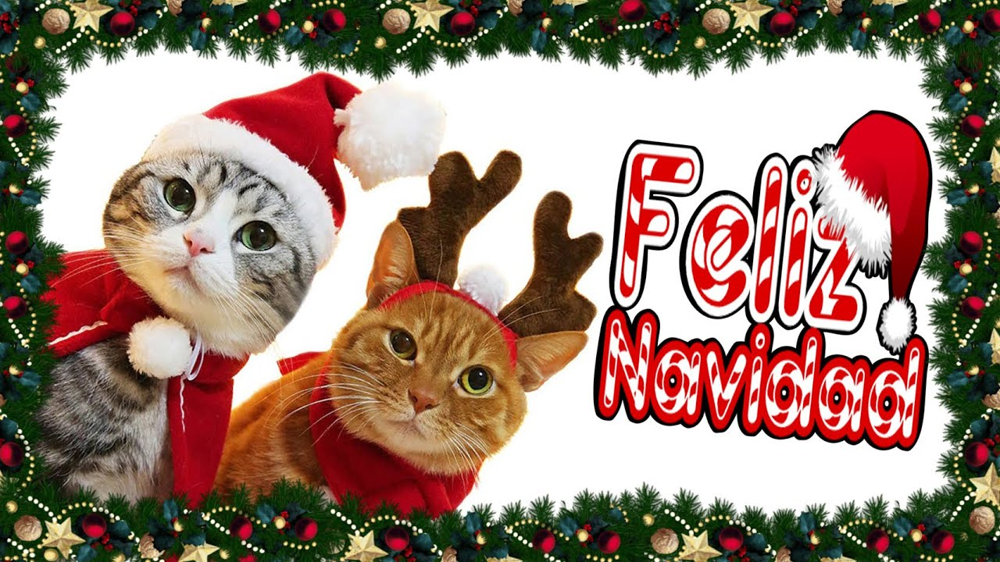

Hola mi niña, solo paso a recordarte que estás super linda y muy guapa. Estás super bonita, eres demasiado linda, mi vida. Quiero que sepas que estoy muy orgulloso de ti y que estoy siempre pensando en ti. Ojo que tenemos muchos besitos pendientes.
En el tiempo que hemos pasado juntos lo he pasado maravilloso y aunque estemos lejitos, eso no quiere decir que no piense en ti.
Yo estoy siempre pensando en ti, mi amor, y en cómo poder hacerte muy feliz.

Cuando te vea, te voy a comer a besos, preciosa.
No puedo esperar el día en el que por fin podamos estar juntos, mi amor.
Te invito a mimir como gatitos toda una tarde.
Quiero llenar tu carita hermosa con miles de besos.
Sé que eres una niña muy linda y sensible, mi amor. Tienes un corazón tan tierno, y aunque te muestres fuerte, yo te conozco y sé lo especial que eres. Por eso, pongo todo mi amor en cada cosa que hago para ti, disfrutando cada momento en que logro sacarte una sonrisa. Me encanta verte feliz y quiero que siempre lo seas. Dedico mi tiempo a ti porque eres muy valiosa e importante para mí. Solo quería recordártelo, mi amor, y mostrarte mi cariño con gatitos, porque sé cuánto los amas. Eres mi princesa hermosa.
Eres una persona maravillosa, y sé que a veces puedes no sentirte bien. Sé que tienes un lado muy sensible que quizás no muestras a nadie más. Pero yo te conozco como nadie más lo hace, y por eso te digo que conmigo puedes ser tú misma. Eres mi niña especial, una niña que merece todo el amor del mundo, y yo te daré todo ese amor. Quiero protegerte y cuidarte cada día, enamorarte cada día, y hacerte sentir la persona más hermosa del mundo. Eres la dueña de mi corazón.
Cada instante compartido contigo se convierte en un recuerdo invaluable, lleno de alegría y significado. Tu presencia en mi vida ilumina mis días y hace que cada experiencia sea más especial. No importa lo que estemos haciendo, siempre encuentro felicidad en tu compañía. Estos momentos juntos son los que atesoro profundamente en mi corazón, y no hay nada que valore más que el tiempo que pasamos juntos.
Este es un pequeño detalle con mucho amor de mi parte, y se me hizo lindo poner el primer dibujito que me hiciste

Te mando un lindo beso princesa gatita 😻😽
Te amo mucho, por favor jamas lo olvides, eres muy amada por mi.
